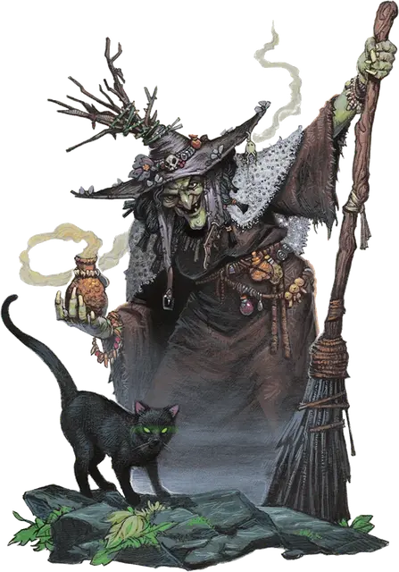

Баровийская ведьма
Barovian Witch
Средний Гуманоид, хаотично-злой

Класс Доспеха 10
Хиты 16 (3к8 + 3)
Скорость 30 футов
| мод | спас | ||
|---|---|---|---|
| СИЛ | 7 | −2 | −2 |
| ЛОВ | 11 | +0 | +0 |
| ТЕЛ | 13 | +1 | +1 |
| мод | спас | ||
|---|---|---|---|
| ИНТ | 14 | +2 | +2 |
| МДР | 11 | +0 | +0 |
| ХАР | 12 | +1 | +1 |
Навыки Восприятие +2, Магия +4
Чувства тёмное зрение 60 футов, пассивное Восприятие 12
Языки Общий
Опасность 1/2 (100 опыта)
Бонус мастерства +2
Особенности
Использование заклинаний. . Ведьма является заклинателем 3-го уровня. Её способность к заклинаниями основана на Интеллекте (Сл спасброска от заклинания 12, +4 к броску попадания заклинанием). Ведьма обладает следующими заготовленными заклинаниями волшебника:
• Заговоры (неограниченно): волшебная рука [mage hand], фокусы [prestidigitation], луч холода [ray of frost]
• 1-й уровень (4 ячейки): луч болезни [ray of sickness], усыпление [sleep], жуткий смех Таши [Tasha's hideous laughter]
• 2-й уровень (2 ячейки): смена обличья [alter self], невидимость [invisibility]
Действия
Когти (Требует смены обличья). Рукопашная атака оружием: +3 к попаданию, досягаемость 5 фт., одна цель. Попадание: 4 (1к6 + 1) рубящий урон. Эта атака считается магической.
Кинжал. Рукопашная или Дальнобойная атака оружием: +2 к попаданию, досягаемость 5 фт. или дистанция 20/60 фт., одна цель. Попадание: 2 (1к4) колющий урон.
Описание
Они предпочитают жить в тени и могут видеть в темноте. Во время путешествия на открытом воздухе они используют заклинания, изменяющие внешность, чтобы принимать менее заметные формы. Также, они используют эти заклинания, чтобы отращивать длинные и острые когти и атаковать ими.
Братья и сестры Страда. Баровийские ведьмы никогда не сомневаются. В обмен на власть они пойдут на сделку с любым. Но и предадут они любого по той же причине. Их единственный страх – Страд, его желания – закон. Баровийские ведьмы иногда называют себя братьями и сестрами Страда, но никогда не упоминают это при нем.
Стаи крыс и кошек. Баровийские ведьмы – навязчивые коллекционеры, каждая из которых считает, что почти все найденное ими – кусок сломанной кости, мертвый грызун, горстка пыли или какой-то другой бесполезный предмет или субстанция – может быть ценным или полезным как компонент заклинания, ритуальный объект, или ингредиент зелья.
Баровийские ведьмы используют заклинание поиск фамильяра [find familiar] для вызова четырех фамильяров. Особенно любят кошек, хотя змеи и жабы тоже распространены. Эти животные скрываются среди беспорядка в логове ведьм и редко блуждают вдалеке от их мерзких хозяев.